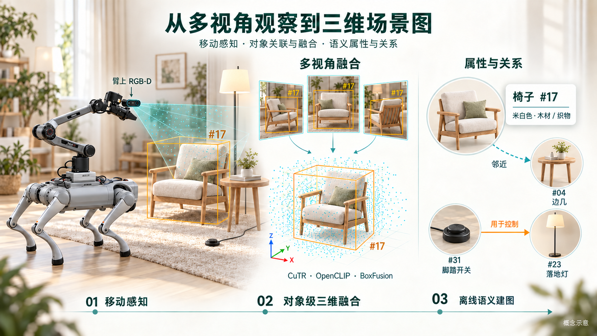

物体在空间中的位置
左上展示三维场景与物体编号、类别；功能关系以连线和文字叠加到场景中。
SCENE GRAPH / OBJECT-CENTRIC ROBOT PERCEPTION
机器人从不同视角看见同一个空间。这个项目把逐帧 RGB-D 观测组织成世界坐标下的物体，再补充它们的属性、功能与相对位置，连接几何感知与语义场景建模。
IN ACTION / RERUN
左上展示三维场景与物体编号、类别；功能关系以连线和文字叠加到场景中。
左下保留相机彩色画面，把空间里的物体与这一时刻的视觉证据对应起来。
右上显示深度图；RGB、深度和三维记录使用同一时间轴，便于对照观察。
右下列出匹配到三维物体的功能关系，随时间轴推进更新文本与场景连线。
场景 1_MP3D_0417 · 由原始 GIF 制作的 2 倍速回放。功能关系读取离线生成的 JSON，再按物体编号叠加到 Rerun；录屏保留原始预测，可能包含类别或关系误判。
01 / THE PIPELINE
真机与仿真共享 RGB-D、内参和相机位姿这一输入契约。几何层处理“看到了哪个物体”，语义层进一步描述“它是什么、与谁有关”。
彩色图、深度与相机位姿组成单帧输入。利用相机到世界的变换，把不同视角放入统一坐标系。
RGB-D · intrinsics · camera poseCuTR 预测带朝向的三维框；OpenCLIP 对图像裁剪与配置词表进行匹配，为保留的物体赋予类别。
CuTR · OpenCLIP · 3D boxes以三维重叠关联物体，以二维重投影补充小物体匹配，再通过多视角观测优化框的中心与尺寸。
3D IoU · reprojection · BoxFusion离线读取关键帧原图和检测 JSON，由 Qwen 描述物体属性，并建立功能关系与位置关系。
Qwen · attributes · scene graph几何跟踪与 Rerun 可视化
实时输入 RGB-D 与位姿，按关键帧运行检测，更新世界坐标下的三维框及相机轨迹。
轨迹处理、检测导出与关系图
保存的真机或仿真轨迹先导出图像与 JSON，再运行视觉语言模型生成场景图。
检测也可使用清洗后的 Matterport3D 标注框，通过逐帧视锥与深度遮挡检查生成可见物体。模型检测与标注路线共用检测 JSON 接口，后续属性与关系生成流程一致。

02 / KEY IDEAS
一次检测只是一帧中的观察。跨视角关联、几何融合与物体语义共同构成可继续扩展的场景表示。
在世界坐标中进行带朝向的三维框重叠判断；针对小物体，再把历史三维框投影回当前画面做二维匹配，补充仅靠三维重叠难以建立的对应关系。
积累具有视角差异的观测，由 BoxFusion 优化框中心与尺寸，使三维表示投回历史视图时与观测更一致。系统直接维护物体框，无需先构建完整网格。
语义层包含颜色、材质、状态和功能描述。功能关系连接可交互元件与主体，例如开关与灯；位置关系描述物体对之间的空间关系。
检测 JSON 用 ann_id 连接关键帧中的框、世界坐标几何与后续语义记录。当前关联会保留高分检测的编号，因此它是关联结果的主键，仍需检查错配和编号切换。
03 / INSPECTABLE OUTPUTS
图像帮助检查感知结果，结构化文件承载物体表示。以下为仓库随附的 test0721 历史输出，展示同一关键帧的原图、检测与关系图。
test0721 / frame 000240 · 查看原始样例与 JSON ↗
历史输出保留原始推断，可能包含误检及关系类别混淆；用于展示产物形式，非本次重跑或定量评测结果。
THREE LAYERS OF OUTPUT
ann_id、类别、二维框，以及世界坐标下的中心、尺寸、旋转与角点。all_objs.json 累积物体描述，连接视觉对象与颜色、材质、状态、功能等语义信息。all_func_relationships.json 和 all_position_relationships.json，支持二维关系图及 Rerun 三维功能边叠加。当前实现覆盖感知与场景图构建：在线入口更新几何结果，关系推理由保存的轨迹离线生成。场景图为后续具身任务提供结构化输入，自主操作是进一步的应用方向。